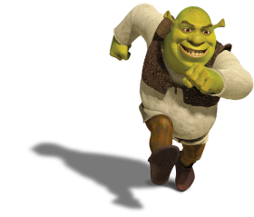

Shrek is a green ogre starring as the main character in the Shrek franchise movies as follows: Shrek, Shrek 2,
Shrek the Third, Shrek Forever After, Scared Shrekless and Shrek The Halls. He valiantly rescues a princess stuck in a tower and guarded by a fire
breathing dragon in order to fight for his swamp and makes friends along the way. The franchise follows his life, experiences, and lessons.
✨Things I Admire about Shrek ✨
- Shrek broke into fairy godmother's potion factory and posed as the workers union in order
to steal a potion for Fiona and drank it without knowing the consequences, he was willing
to give up his life as an ogre and become a human if that was what made Fiona happy.
- Shrek became friends with Puss and Boots even though he tried to kill Shrek
- Shrek was very cool in the "Bad Reputation" fighting montage in Duloc